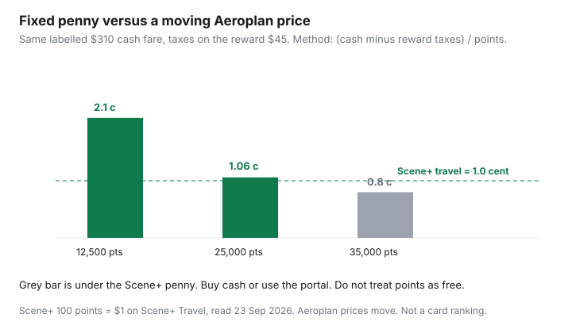

Travel · Canada
Scene+ for Travel vs Aeroplan: Pick One Ecosystem Without the Complexity
Two programs, two apps, and a flight that still gets bought on a credit card because nobody priced the points. Scene+ is a penny you can explain at the kitchen table. Aeroplan is a flight price that moves. Most households need one of those, not a tour of both.
This is a redemption framework, not a card ranking and not a sign-up bonus table. Compare products somewhere that maintains live offers if you are choosing plastic. Here, the question is what to do with points you already earn, and when to stop.
Disclosure: Travel-rewards education and a travel-booking portal are offer types. Saving Optimizer may earn a commission if we later add partner links. We do not claim a Scene+, Aeroplan, Scotiabank, or Air Canada partnership. This page does not rank credit cards. Point values were read from program pages on 23 Sep 2026.
Key takeaways
- Scene+ travel is a fixed 1 cent: 100 points = $1 on Scene+ Travel (powered by Expedia) and on Apply Points to Travel for an eligible card purchase, generally within 12 months.
- Aeroplan is a variable flight price. The same $310 labelled fare can be about 2.1 cents a point or about 0.8 cents, depending on how many points the seat costs.
- Empire-banner groceries (Sobeys, Safeway, FreshCo, and the other participating stores) are how many households fund travel without taking a second job as an award searcher. Earn rates change. Read the current table.
- Run one primary currency, plus a cash-back card type for tills that do not earn it. Splitting two complex programs is how points expire in a drawer.
- Price one real itinerary three ways before you transfer, wait, or redeem: cash, Aeroplan plus taxes, Scene+ at 1 cent off the portal price.
- If you will not learn award search, Scene+ or cash back wins. Aeroplan rewards the household that will actually look.
Scene+ fixed ~1¢ travel portal value vs Aeroplan variable flight value
Scene+ publishes a fixed travel rate. On the program’s own pages, read 23 Sep 2026, you redeem 100 points for $1 toward flights, hotels, car rentals, or things to do booked through Scene+ Travel, powered by Expedia. The same 100-for-$1 rate is how Apply Points to Travel works on eligible travel already charged to a participating Scotiabank Scene+ card, generally within 12 months of the purchase posting. Groceries and other Scene+ rewards use that same penny in many redemptions. One cent is the planning number. It is not a teaser rate that collapses at checkout if you are inside the published rules. Portal prices themselves still move, so a “free” hotel can be a hotel that was overpriced in cash. Compare the cash price.
Aeroplan does not have that penny. A seat is whatever the search returns, plus taxes and fees. The labelled chart on the next page of this site — cents per point versus cash — is the way to score it. For a picture: a $310 cash fare, with $45 of taxes still due on the reward, is about 2.12 cents a point at 12,500 points and about 0.76 cents at 35,000 points. Scene+ would take 31,000 points to erase a $310 portal booking, every time, because 100 points are a dollar. The variable program wins only when the points price is low enough to beat that penny by enough to pay for the search.

When Scene+ hotels/flights through the portal beat hunting award seats
Use the Scene+ portal when the trip is a specific hotel or a specific flight that does not have a reward seat you are willing to hunt, and the portal’s cash price is close to booking direct or through another public fare. One cent of a fair cash price is a fair redemption. One cent of an inflated portal price is a worse fare you paid with groceries.
Check three numbers on the same dates:
- Cash fare or hotel rate you would actually book, all-in.
- The same trip on Scene+ Travel, and how many points 100-for-$1 removes.
- The Aeroplan price in points plus the taxes the reward still charges, if a seat exists.
If Aeroplan has no seat on your dates, the portal is not a compromise. It is the program that can buy the trip you have. Waiting six months for a partner business seat you will not search is how a family vacation becomes a discussion. Book the portal or pay cash, and keep Aeroplan for a trip you will plan on purpose. Hotels are often where the fixed penny wins, because award hotels are a second hobby. Flights are where Aeroplan can win, when the points price is a short-haul seat and not a dynamic peak fare.
Grocery and everyday earn that feeds travel for Empire-banner households
Scene+ is the travel program that sits on the grocery trip many households already do: Sobeys, Safeway, FreshCo, Foodland, IGA where the banner participates, and Voilà. The base earn and the card multipliers change. Read the current table at the till you use. Do not import a rate from an old post. The travel decision is what the points are worth once they exist, which is the penny above, including at the grocery redemption most people already understand.
If the household’s food shop is Loblaw banners, PC Optimum is the grocery program and Scene+ is not the engine. Our grocery guide Scene+ for free groceries is the earn-side detail. This page will not repeat it. The link matters so you do not build a travel strategy on a banner you do not enter.
Everyday spend on a Scene+ card can add points. It can also add a fee and a habit of revolving a balance, which destroys a one-cent reward at typical card interest. Pay the card in full. If you do not, the right “program” is a lower interest rate, not a portal.
Avoid splitting: one primary currency plus a cash-back backup card type
Two half-learned currencies are worse than one boring one. Pick the program that matches the flights you take and the store you already enter. Use the other, if at all, as a cash-back card type: a simple percent on spend that does not earn the primary points, paid in full, with no award chart.
Practical splits that stay sane:
- Empire groceries, occasional flights, no interest in award search. Scene+ primary. Cash-back card type everywhere else.
- You already hold a large Aeroplan balance from flying. Aeroplan primary for flights you will search. Do not open a second obsession to “diversify.”
- You revolve a balance. Neither program. Interest is the product you are buying. Fix that before points.
This page does not name a best card. Live offers, fees, and insurance certificates change, and a ranking would be stale the week we published it. A comparison site that maintains those offers is the right tool if you are choosing plastic. The footer of this site points at one. The decision here is the currency, not the application.
Compare a real itinerary both ways before transferring or waiting
Before anyone transfers points, waits for a devaluation rumour, or redeems out of impatience, price one itinerary the household might actually take. Same dates, same airports, same room.
| Path | Labelled example | Your trip |
|---|---|---|
| Cash, all-in | $310 | |
| Scene+ points at 1 cent | 31,000 points if the portal price is also $310 | |
| Aeroplan points + taxes | 12,500 + $45 (about 2.1 cents) or 35,000 + $45 (about 0.8 cents) |
Transfer only when the Aeroplan column beats the Scene+ column on a trip you will book this season, and you understand you cannot easily undo a transfer. Waiting is rational when you fly that route often and you know how to search. Waiting is procrastination when the dates are a school holiday and the portal price is fair. Book.
Complexity budget: if you will not learn award search, Scene+ or cash-back wins
Award search is a skill: calendars, partner airlines, mixed cabins, and a chart that changed on 1 June 2026. If nobody in the household will spend an evening learning it, you will redeem badly or not at all. Scene+ at one cent, or a cash-back card type, is the correct program. There is no prize for complexity you do not use.
Keep Aeroplan if someone will do the work and the cents-per-point test on the cash-versus-points page clears your cash-back alternative. That page is the ceiling check and the “buy the ticket” rule. This page is the choice of ecosystem. You do not need both programs to feel like a travel person. You need one path that turns ordinary spending into a trip you take, and a backup card that does not require a login.
Sources & date stamps
- Scene+ and Scotiabank Scene+ pages — 100 points = $1 on Scene+ Travel (powered by Expedia) and on Apply Points to Travel, generally within 12 months of an eligible card purchase. Used 23 Sep 2026.
- Air Canada Aeroplan flight reward chart (PDF marked 2026-08) — variable “starting at” prices, not a fixed cent. Used 23 Sep 2026. The worked cents are arithmetic on a labelled fare, not a live seat.
- Saving Optimizer, Scene+ grocery guide — earn-side detail for Empire banners. This page does not restate earn rates.
Frequently asked questions
Is Scene+ worth one cent for travel?
That is the published rate: 100 points for $1 on Scene+ Travel and, for eligible card purchases, Apply Points to Travel within about 12 months. It is a good deal when the portal’s cash price is fair. It is a poor deal when the portal price is higher than the same room or flight elsewhere, because you are spending a penny on an expensive dollar.
When does Aeroplan beat Scene+?
When a reward seat on your dates costs few enough points that cents per point clearly beat one cent, after the taxes the reward still charges. A labelled $310 fare at 12,500 points plus $45 in taxes is about 2.1 cents. The same fare at 35,000 points is about 0.8 cents, which loses to Scene+ and to a simple cash-back alternative.
Should we collect both?
Not as a project. One primary program, plus a cash-back card type for spend that does not earn it. Two half-used balances is how points sit unused. If you carry a card balance at interest, neither program is the priority.
Do Empire grocery points pay for flights?
They can, at one cent, if you redeem them on travel instead of only at the till. Participating banners include Sobeys, Safeway, FreshCo, and others. Earn rates change. If you shop Loblaw banners, this is the wrong grocery engine.
Does this page rank travel cards?
No. Fees, bonuses, and insurance certificates change. Choose a card on a site that maintains live offers if you need plastic. Here, pick the currency you will actually redeem.